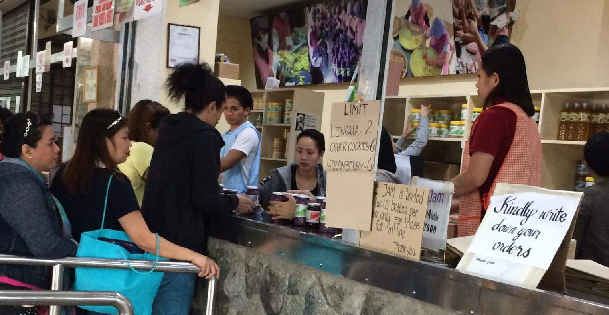
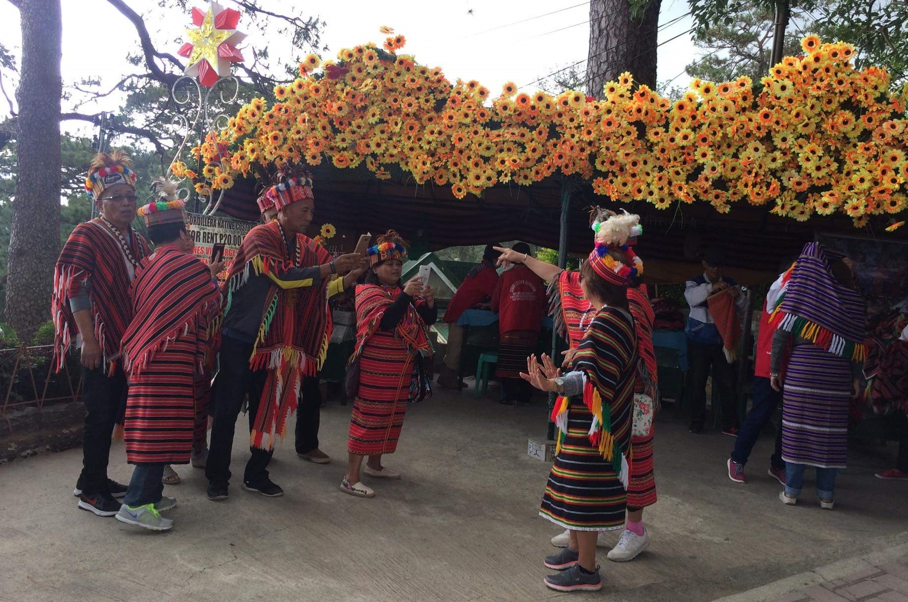

Raising Gender Awareness
Men and women have a similar human rights. In any case, young men and women encounter distinctive open doors in view of their gender. There are diverse desires to young men and young women that affect their contribution and affect - in their association and society. In a few circumstances, men and women are minimized and deprived of their rights on the grounds of cultural standards and tradition. Also, young men and women can encounter demands and barriers in view of their gender. Gender role are found in associations, at work showcase, in government issues and in the family.
Raising gender awareness aims at showing how the current values and norms influence the real world. It challenges values and gender norms by explaining how they affect and maximize the thoughts taken into consideration. Besides that, raising gender awareness aims to motivate and inspire an over-all understanding about gender issues.
Advocating Gender Equality
Our advocacy is not advising ladies to resemble men or to defeat men; not influencing a rundown of do's to and don'ts or giving them on what should they do.
Instead our advocacy is advising men and women to grow their social space so they can totally go up against parts as indicated by their individual limits, making special alternatives for men and women to see the improvement and the sort of society they need, and based on understanding their circumstances, conceiving techniques for change and strategies to accomplish that vision and it is about tuning in to others, and with them, examining circumstances and detailing arrangements as indicated by winning assets; It is monitoring the many-sided quality and trouble of the ideas that require understanding, the qualities that will be tested, establishments that must be changed.
Promoting Gender Equality and Empowerment
While the world has succeeded the progress towards gender equality and empowerment of men and women under the different advocacies and guidelines including equal access to education between men and women. However, some of them continue to suffer discrimination and violence in every part of the world.
Gender equality is not only essential when it comes to human right, but it is the foundation for a peaceful, prosperous and sustainable society.Providing men and women with equal access to education, medical assistance, work, and political and economic decision-making processes will fulfill a sustainable community.